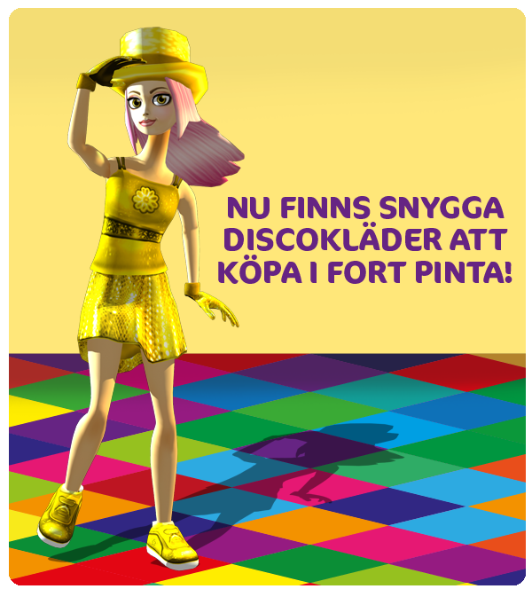

Hej alla!
Här kommer veckans onsdagsuppdatering!
Nya kläder:
I Fort Pinta pågår nu försäljningen av discoinspirerade kläder.
Uppdrag:
De uppdrag som fortsätter nästa dag symboliseras med en urtavla. En uppdragsgivare som delar med sig av ett uppdrag som man måste vänta på syns på din karta som en liten urtavla och har en ikon föreställande en klocka ovanför huvudet istället för ett utropstecken. I din uppdragslogg har alla dessa uppdrag också en ikon föreställande en urtavla.

Gyllenåsarnas dal:
Gyllenåsarnas dal planeras att öppna nästa vecka. Uppdragen som leder till att området öppnas blir tillgängliga för de Star Riders som är level 12 och gjort vissa nödvändiga uppdrag. (De nödvändiga uppdragen innefattar alltså rådslaget i Den Hemliga Stenringen samt att man hjälpt Alex med att få sin Tin-Can).